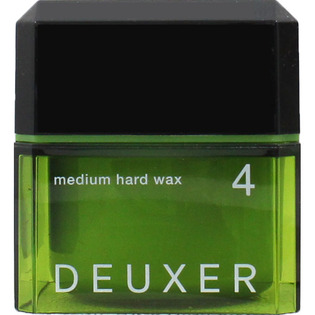

返回列表
产品名称：デューサー ミディアムハードワックス 4

ナンバースリー デューサー ミディアムハードワックス 4 ８０ｇ
メーカー ナンバースリー
JANコード 4985514032449
商品の特徴
強めのセットで束と動きを
- 成分・分量
- 水、マイクロクリスタリンワックス、コハク酸ジエチルヘキシル、キャンデリラロウ、ヒドロキシステアリン酸、セテス-10、BG、セテス-6、水添ダイマージリノール酸PEG-40、ステアリン酸グリセリル（SE）、ラフィノース、マカダミアナッツエステル、PEG-90M、水酸化Na、トコフェロール、フェノキシエタノール、BHT、メチルイソチアゾリノン、メチルパラベン、プロピルパラベン、香料
- 用法及び用量
- ＜使用方法＞
○少量を手のひらでよくのばしてから、髪になじませてください。
○使用後は必ずキャップをしめてください。